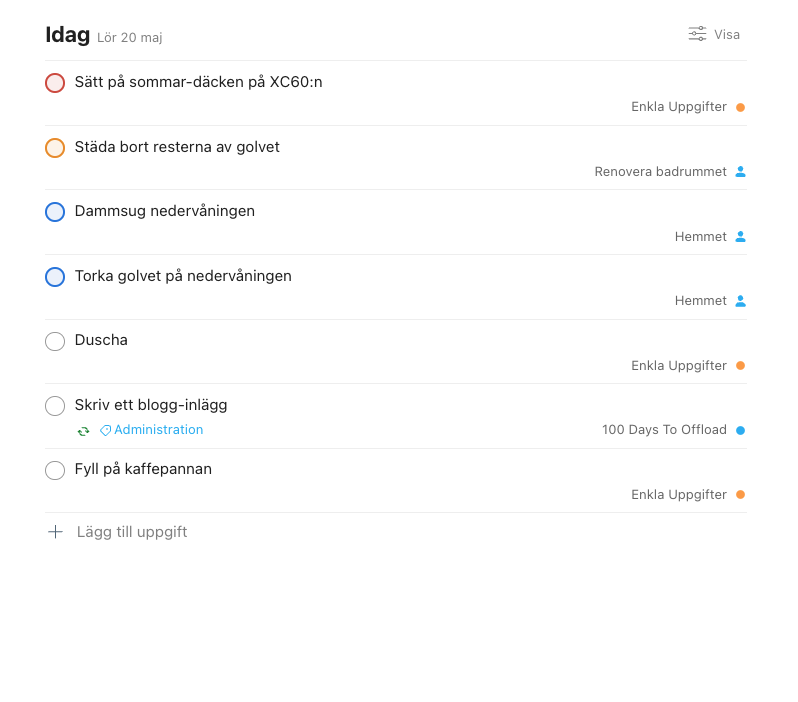
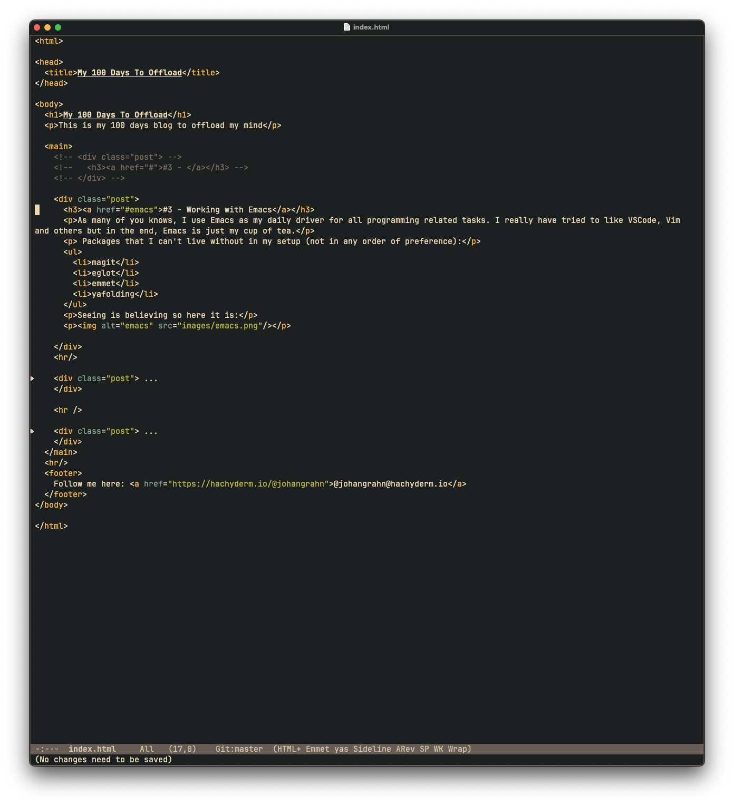

When people (usually the kids) ask me what is my favorite game is, I whould say that it depends on what day and
time it is :)
Currently i'm switching between Horizon Zero
Dawn and God of War on my PS4.
I don't know how many hours I have spent on these games but if I'm honest I don't even want to know :)
My achivements so far:
- God of war
- 100% Completion on Give Me God Of War Difficulty
- PS4 Platinum Throphy
-
Horizon Zero Dawn
- 100% Completion on Utra Hard Difficulty
- PS4 Platinum Throphy
- Finished New Game deathless on Ultra Hard Difficulty
I am a little bit proud of this, but I know that I'm not alone to have these achievements, but I feel a little
bit special :)
This is how my todo list looks today (at 8AM)

Tasks are categorized into colors based on priority. Red must be done today, Orange whould be nice to do,
Blue is if I have the time and so on.
Before you even think to ask: "Oh, he must have a cool system that he uses for YEARS! I must know what it
is!". NO, I DON'T! I change my system all the time and between apps. I would say though that Todoist and this
type or prioritization is the thing I have sticked with longest.
But, who knows, I might change it tomorrow :)
I am no religion person by any means of the words. Some would say i'm ateist. I just don't care. I don't
believe in a higher power or that God is watching over us.
I believe in that whatever we do, affects the next action that we take and that we are fully responsible for
our own actions.
I have done a lot of things that might not have been my best decisions, and when I write this I know that a
lot
of things that has happend to me is not fair or well-deserved, but I don't blame anyone for them.
The only thing I can do is to focus on the possitive stuff that happens and try to minimize the impact that
the
bad has on me.
For me, I have so many good things in my life that I can be grateful for that I have and feeling blessed
without saying that a God or some other dude have given me it
During the last couple of months I have been dealing with a lot of setbacks that it has come to point when
you ask yourself: What is the f**king point? To name a few:
- Economy gotten a lot worse
- My kids having trouble in school
- My bathroom has a hole in the floor because of bad waterproofing in the floor-protection
- Issurance companies being a**holes
It is now you start to question the basic stuff, and you feel like you don't have anymore to give.
Me and my spouse talked about this today and we came to the conclusion that whatever happens we still have
eachother.
I don't know where I would be without her, and I cheerish every day we can sit on our chairs, drinking coffee
and look at the sunrise.
Take care of the person next to you, it should be the most valuable person to you ♥
Over a number of years I have been using most of the digital todolist software that exists to the Apple
Ecosystem. To name a few:
- Todoist
- Things
- Omnifocus
- TickTick
- Remember the Milk
- 2Do
They all work just fine for their defined purpose, which is to list the things that you need to do.
The problem that I have is that I use one, find something that bothers me with it (wrong color, not
responsive enough, bad fonts, too much whitespace) and switch to another one for about a couple of days, and
then find something wrong with it, and switch. You see the pattern here?
So, basically, I have a todolist-switching-disorder :)
Sometimes, you start the day feeling like the world is OK. Not very good but not bad. And then the day
progresses and things are still OK, and then something happens and you just feel like a train hits you in the
face and you just sit there and can't get up.
This happens to me not on a daily basis, but maybe 2 times a week. I just can't move. A part of me is telling
my body to move but I simply can't. I'm sort of paralized but inside the mind, not the body.
To outsiders it can look like i'm daydreaming, but i'm just stuck. It takes maybe up to 10 minutes before I
can continue on and finish the day.
So, why is this happeing? I have some ideas, but nothing that is always leading up to the freeze:
- Not enough sleep
- Have big (or a couple of smal) decisions that needs to be taken care of
- Trying to do more than I'm capable of
It can also be a combination of these, I don't know. The only thing I know for sure is that it is both scare
and so damn annoying, but I'll know that it will eventually pass.
There is no course or book or Youtube-video that will make you deal with suffering without actually feeling
it.
I know that there are courses and stuff that can make you cope with the feeling and anxiety and stuff, but
there is nothing for the actual lump in your stumach. It doesn't matter what type of suffering it is, the
feeling is the same:
- The pain in your stomach
- The tears that doesn't seem to quit
- The mere ace in your body of the stress of dealing with the anxiety
- And my personal favorite: Trying to eat as much bad food (with alot of sugar in it) that you can possibly
stomach
Every person deals with suffering in their own way, but my best tip besides the "See a therapeut, talk to
someone, etc." is basically "Own the pain!". Don't let it get any room inside of you!
Many times during the day I look at myself and I don’t like what I see.
I know that I'm a good person and I know that in my heart my decisions are pure.
My problem is that I feel that I can do way better. That I can be better.
One off this is being accountable for my mind and body. I know that my body needs more attention. Both in
training
and in relaxation. I want to feel my muscles and joints. I want to feel my entire body being just one machine
striving towards a goal.
What is my first goal? What is the first thing I want to achieve? 10 000 steps each day? According to swedish
research:
Forskningen säger att minst 7 000 steg motsvarar den allmänna rekommendationen om fysisk
aktivitet
som
Världshälsoorganisationen står bakom, säger Eva Jansson, professor emerita vid institutionen för
laboratoriemedicin, Karolinska Institutet.
So, I'm going to start with the goal to do 8 000 steps each day to begin with and report my progress.
One thing that i'm still learning is to properly prioritize between everything that is happeing around me.
There is a lot of techniques if you start to google it like:
- Eisenhower matrix
- Eat the frog
- Pomodoro
- etc...
I have tried every one and after about maybe 5 years I have realized that there is no proper solution to this
since it
depends on the situtation, energy level, external factors and others.
Since I have a lot of mental resistance (going to write about it in another post in the future) it is really
hard to get the mind to focus on the thing that needs my undivided attention.
I have a lot of goals and dreams in my head, but they always get overrun by the decisions that we face every
morning. You can think thoose decisions are of the calibur "Should I take this job oppertunity or continue
with my old one?" but it is not. My level is around "Should I take cererials or porage to
breakfast?" and those can drain me so that rest of the day I have low energy to deal with the bigger
decisions that happens to the family or work.
Most people that I talk to about this just says, "Well, just pick one!", but that is exacly the problem. I
can't pick between them, and it is damn fustrating to have that struggle on every decision daily. The same
goes into things like "Should I use ExpressJS or NextJS for this new project that I want to build"?
Bottom line is: I'm not lazy, I just struggle with other things that "normal" people don't.
Apperantly there is 2 standards when it comes to importing stuff in NodeJS
And it doesn't seem like the community can come to decision on which one to use. And then we come to the
lovely
statement of "it depends" :(
This is the type of things that grinds my gears :)
As many of you knows, I use Emacs as my daily driver for all programming related tasks. I really have tried
to
like VSCode, Vim and others but in the end, Emacs is just my cup of tea.
Packages that I can't live without in my setup (not in any order of preference):
- magit
- eglot
- emmet
- yafolding
Seeing is believing so here it is:

When I accepted this writing challenge to write every day, my brain immediately started to thing about all
the
things that was needed:
- Scalability: How can I enable caching?
- Headless CMS: How can I change the editor without changing the underlying backend?
- Databases and ORM: If I want to change to another database, which ORM should I use to make that as
seamless as possible?
- Edge-workers: To be able to serve the content all around the world without latency
After thinking about this for a couple of hours, I realized that I can't do this project, it is just too
complex!
Evetually, after talking to a lot of people about this I realized that I have forgotten the most basic rule
of
developing software (or other things aswell): KISS (Keep It Simple Stupid). So, after that
relalisation,
the following stack is currently used:
- GitHub hosting the full site
- Use only BASIC HTML syntax, nothing else, no Tailwind, no SCSS, no <insert all iterations of all JS
frameworks>.
- No server-side rendering
Because, in the end, content is all that matters to the reader :)
Okay, since a lot of people over at Podsnack Slack where starting to write according to the challenge 100DaysToOffload, I thought that, I can do this aswell! :)
I have really struggled with writing stuff online since I doesn't feel like I have something to contribute to
the masses of Bloggers, Influencers, Tech Writers and others. And on top of that I can't spell for shit :) But
people say that, with practice you can learn anything so let's get out of that comfort zone then :)